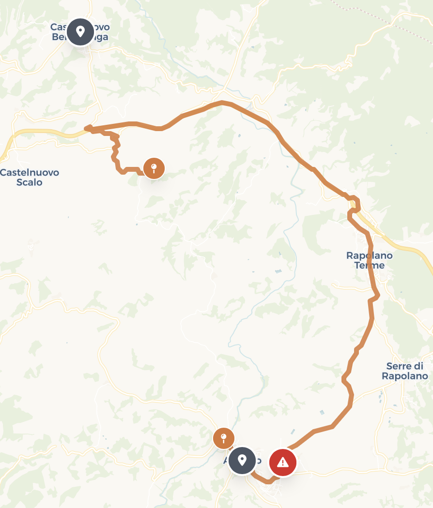

Mappa e Profilo GPX
Carica file GPX o seleziona una giornata di default
Profilo Altimetrico
Carica un percorso per visualizzare dettagliCronoprogramma & Punti Chiave
Tappe, soste cibo e pernotto dei 3 fratelli
Partenza da Santa Croce sull'Arno
Ritrovo iniziale dei tre fratelli. Pieno di carburante e riscaldamento motori prima della guida verso il Chianti.
Gaiole in Chianti
Il cuore pulsante dell'Eroica. Sosta foto davanti alla scultura del Gallo Nero e visita al borgo prima dello sterrato.
Castello di Brolio
Castello del XII secolo. Bellissima salita sterrata tra i cipressi con splendida vista panoramica sulla vallata.
Pianella
Piccola frazione nel territorio di Castelnuovo Berardenga. Breve sosta panoramica.
Pranzo a Radi
Pausa ristoro all'alimentari storico con salumi locali per un panino toscano veloce, tipico e genuino.
Murlo (territorio comunale)
Affascinante comune con bellissime strade bianche e paesaggi delle Crete. Sosta fotografica.
Bibbiano
Località tra Murlo e Montalcino. Zona collinare suggestiva con vista sulla valle dell'Ombrone.
Lucignano d'Asso
Piccolo borgo medievale. Sosta per foto e panorami.
Torrenieri
Frazione di Montalcino, famosa per i vigneti di Brunello. Sosta tra i filari.
Arrivo a Montalcino
Famoso per il Brunello. Strade bianche con pendenze >15% ed enogastronomia toscana di altissimo livello. Sistemazione e doccia in hotel.
Partenza da Montalcino
Check-out dall'hotel, controllo bagagli e riscaldamento motori in direzione nord verso Gaiole.
Deviazione Buonconvento
⚠️ Splendido borgo medievale. Deviazione obbligatoria per evitare sensi unici e strade chiuse. Seguire il GPX aggiornato.
San Giovanni d'Asso
Borgo medievale nel cuore delle Crete Senesi. Visita al Castello e alla famosa sagra del tartufo bianco.
Asciano
Cittadina nel cuore delle Crete Senesi. Sosta nel centro storico.
Monte Sante Marie
Il leggendario e tecnico tratto sterrato delle Crete Senesi. Guida in piedi sulle pedane per divertimento e adrenalina.

I 4 Settori del Tracciato
Si lascia l'abitato di Asciano su strada bianca ondulata (pendenza fino al 12%). Fondo sassoso.
Pendenze fino al 20% su fondo sconnesso. Include il cippo dedicato a Fabian Cancellara (Spartacus). Il tratto più impegnativo dell'Eroica.
Breve discesa seguita da una seconda salita con pendenze costanti intorno al 10%.
Saliscendi in cresta e curve polverose con panorami spettacolari sulle Crete Senesi. Si conclude a Torre a Castello.
Consigli di Guida in Moto
- Pneumatici tassellati o misti con pressione leggermente abbassata.
- Guida in piedi sulle pedane per stabilità sui tratti sconnessi e pendenze.
- Tieni il motore in coppia ed evita accelerate brusche per non perdere aderenza.
Pranzo a Radda in Chianti
Sosta ristoro nel borgo medievale. Pranzo tipico toscano (La Capannina o Agriturismo Il Pozzo) e visita al centro.
Castelnuovo Berardenga
Comune medievale tra Asciano e Gaiole. Breve sosta panoramica.
Badia a Coltibuono
Visita all'antica abbazia benedettina millenaria. Degustazione vini locali e sosta culturale prima del rientro.
Rientro a Gaiole in Chianti
Arrivo finale all'anello dell'Eroica classica. Foto di gruppo e saluti finali a partire dalle ore 17:00.
Meteo Percorso
Previsioni e dati storici Open-Meteo
Foto Imperdibili
Scatti leggendari lungo la via
Preparazione Bagaglio
Kit moto, attrezzi e cose essenziali
Consigli del Pilota Locale:
- Distanza e Polvere: La visibilità su strada bianca scende a zero. Mantieni una distanza di sicurezza di almeno 40 metri.
- Ciclisti in curva: L'Eroica è amata dai ciclisti. Fai molta attenzione nelle curve cieche e mantieni velocità moderate.
- Rifornimento: Nelle zone delle Crete Senesi i distributori sono rari. Fai il pieno ad ogni sosta utile.